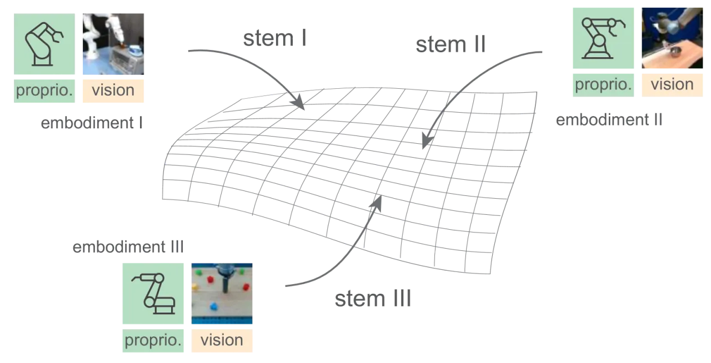
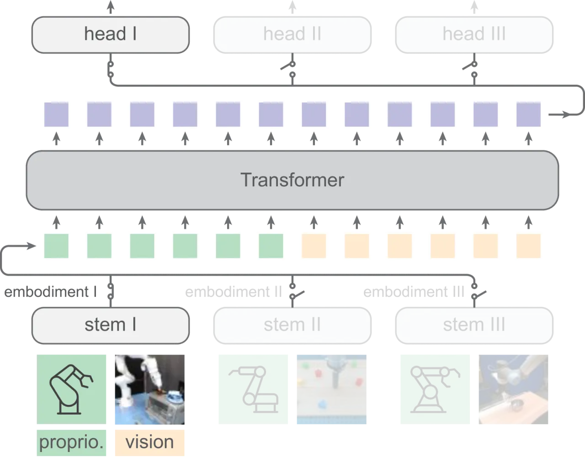
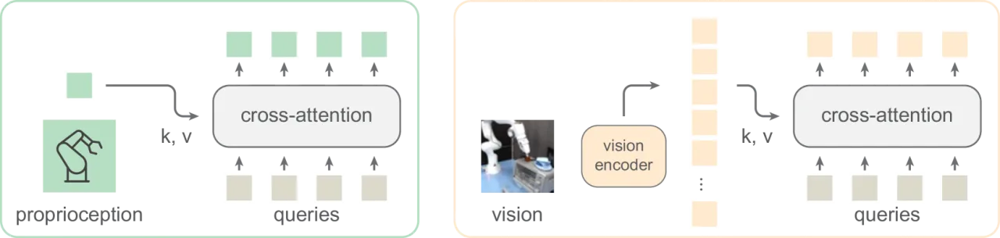
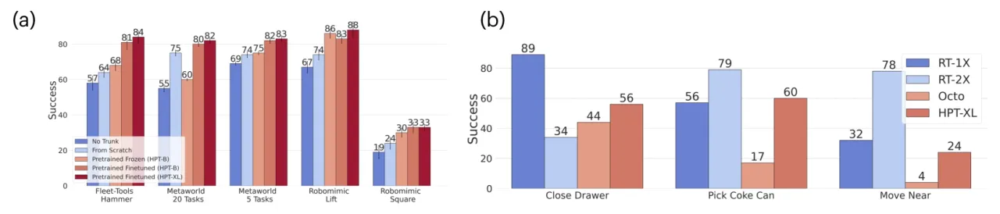
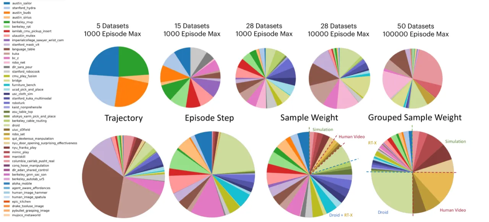

HPT 提出一种模块化 Transformer 策略架构，通过形态专属的 stem 将不同机器人的本体感知信息与视觉观测对齐为固定长度的 token 序列，然后送入共享的大型 trunk 中学习跨形态的通用表征。在 52 个数据集、超过 270k 条轨迹上预训练后，HPT 在迁移至未见任务时性能提升超过 20%，并在实际机器人操作中显著超越从头训练的基线。
机器人学习领域面临一个核心挑战：不同机器人形态（embodiment）拥有各异的硬件结构、传感器配置和动作空间，导致现有方法通常为特定形态和任务单独收集数据、单独训练模型，难以实现跨形态的知识复用和泛化。
"We want to pre-train task-agnostic and embodiment-agnostic foundational models that can map raw sensor signals from individual embodiments into a shared latent space."
现有的大规模机器人数据集（如 Open-X-Embodiment）汇集了多种形态，但由于形态异质性（heterogeneity），简单地将所有数据混合训练往往效果不佳。本文的核心问题是：能否设计一种通用预训练框架，使得跨形态、跨任务的数据能够真正互补，而非相互干扰？

HPT 将策略神经网络拆分为三个模块：形态专属的 stem（输入对齐层）、可共享的大型 trunk（Transformer 主干）、以及任务专属的 head（动作输出层）。预训练阶段共享 trunk，迁移时仅微调 head 或全部参数。

对于形态 k，proprioceptive tokenizer 将任意维度的本体感知序列（关节角度、末端位姿等）映射为 Np=16 个固定维度 token：先用 MLP 映射到特征空间，再施加 sinusoidal 位置编码，通过 cross-attention 将特征压缩到 16 个可学习 query token 上。Vision tokenizer 则先用冻结的 ResNet-18 提取图像特征，再同样通过 attention 映射到 16 个 token。两组 token 拼接后形成 32 个输入 token 送入 trunk。

Trunk 是标准的 Transformer encoder，提供五种规格的参数量：
| 规格 | 参数量 | 深度 | 宽度 |
|---|---|---|---|
| HPT-Small | 3.1M | — | — |
| HPT-Base | 12.6M | — | — |
| HPT-Large | 50.5M | — | — |
| HPT-XL | 226.8M | — | — |
| HPT-Huge | 1.1B | — | — |
预训练阶段，trunk 对所有数据集共享权重，通过 switch 机制在同一个 batch 中激活不同形态的 stem/head 对，实现真正的异构联合训练。迁移时，trunk 初始化来自预训练权重，head 重新初始化后再端到端微调。
默认设置使用 27 个 RT-X 数据集（16k 轨迹，5M 样本，batch size 256）。大规模设置扩展到 52 个数据集（270k 轨迹，155M 样本，batch size 2048），涵盖 42 个真实机器人数据集、7 个仿真数据集、3 个人类视频数据集和 1 个已部署机器人数据集。
实验在仿真和真实机器人两条线上展开：仿真使用 Meta-world、RoboMimic、Fleet-Tools 和 Simpler（Google EDR 机器人）基准；真实机器人实验在接触丰富型操作任务上与多个基线对比。
在 Meta-world、RoboMimic、Fleet-Tools 三个仿真基准上，HPT 预训练权重经微调后相比从头训练的基线，在未见任务上成功率平均提升超过 20%。在 Simpler 基准上，HPT-Base 与 Octo、RT1-X、RT2-X 表现相当，验证了跨形态预训练的迁移能力。

在真实机器人操作任务上（Sweep Leftover 等接触丰富型任务），HPT 显著优于从头训练的基线：
| 方法 | Sweep Leftover 成功率 |
|---|---|
| From Scratch（无本体感知） | 26.7±3.3% |
| From Scratch（含本体感知） | 43.3±3.8% |
| R3M | 50.0±3.0% |
| No Prop. Finetuned（HPT，无本体感知微调） | 63.3±2.6% |
| HPT-Base Finetuned | 70.0±3.0% |
| HPT-XL Finetuned | 76.7±3.3% |

实验表明 HPT 呈现出良好的 scaling 特性：
"Embodiment splits in balanced dataset mixture are rather simple"——目前的数据集混合策略仅做了粗粒度的形态平衡，没有针对任务难度、数据质量或分布偏移进行更精细的采样调度，可能导致某些形态或任务被欠采样。
"Data filtering to ensure quality is under-explored"——当前预训练直接使用原始数据集，未对低质量、噪声较大的轨迹进行过滤，而数据质量对预训练效果影响显著。
"Heterogeneous pre-training can converge slowly"——由于不同形态的梯度可能相互冲突，trunk 的联合优化比单一形态训练收敛更慢，在大规模设置下计算成本显著增加。
"Policies still do not offer very high reliability on tested tasks (typically below 90%)"——即使是最大的 HPT-XL，在真实机器人任务上最高成功率仅约 76.7%，距离工业级可靠性（>90%）仍有较大差距。
实验主要集中在"short-horizon manipulation tasks with fixed embodiment"，未涉及长时序任务、移动操作、或多臂协作等更复杂场景，泛化边界尚不清晰。